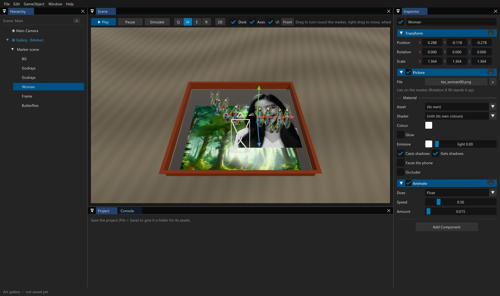

Your first world
Open Diorama: the art gallery is already there. Press ▶ Play, allow the webcam and hold up the printed Kanji marker (File > Build Game writes it, with markers.png to print). Then GameObject > 3D Object > Cube, press W and drag it about.
Minimum requirements
| System | Windows 10 or 11, 64-bit (Linux builds from source) |
|---|---|
| Processor | any 64-bit processor |
| Memory | 8 GB RAM |
| Graphics | any graphics card with OpenGL 3.3 (2010 or newer) |
| Disk | 200 MB, plus your projects |
| Other | Microsoft Edge WebView2 (part of Windows 11); a webcam only to test AR live; Android builds need Java 17 and the Android SDK |